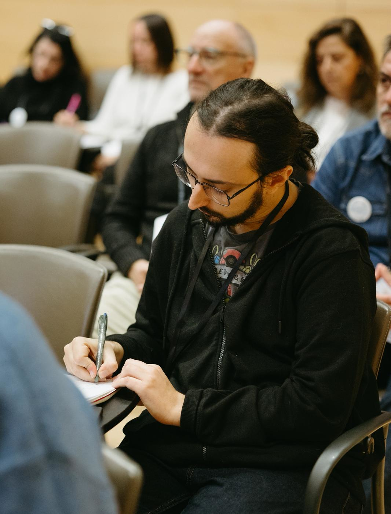
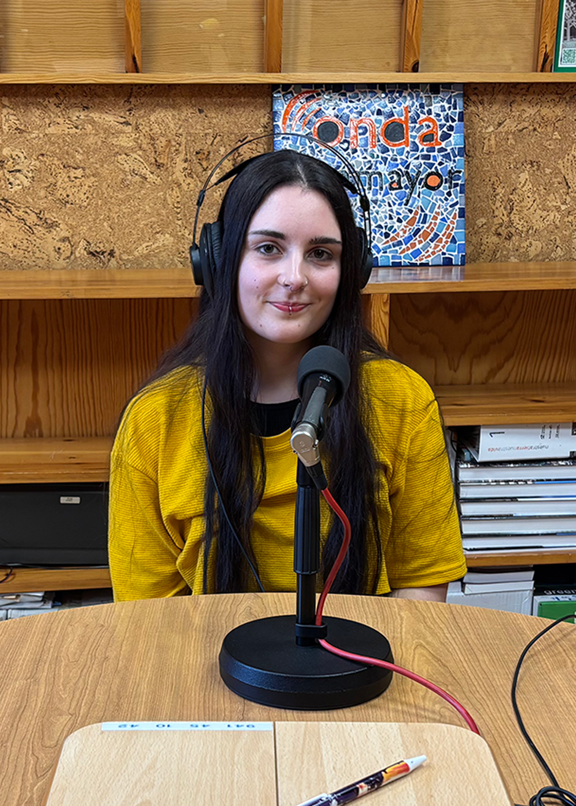
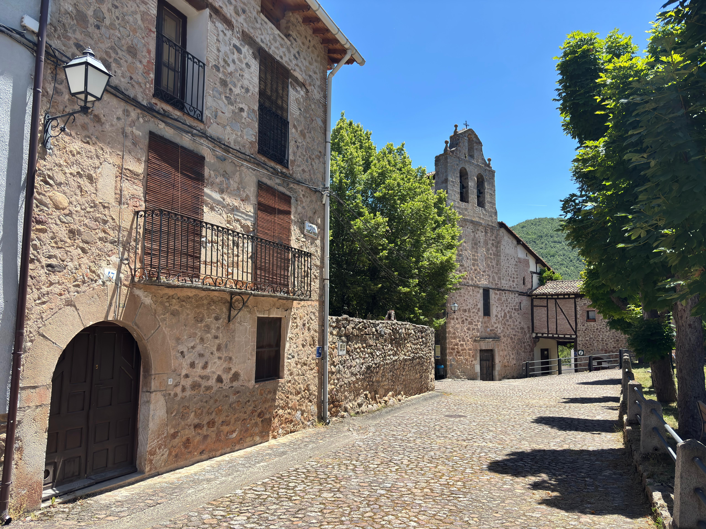

El equipo
Erveca Studio es, ante todo, un proyecto de vida en Pradillo, un pueblo de poco más de sesenta habitantes en la sierra de Cameros, La Rioja.

Dirección y programación
Conocido también como Samuyo96, Samuel está al frente del desarrollo y la programación de los juegos de Erveca Studio, desde la arquitectura técnica hasta la implementación de cada mecánica, en Unity.

Diseño
Isabel se encarga del diseño de Erveca Studio, compaginando el proyecto con su trabajo como ayudante de cocina y sus estudios. Su mirada da forma al universo visual y narrativo de cada juego.

Nuestra base
Pradillo es un pequeño municipio de la sierra riojana, en la comarca de Camero Nuevo, a 880 metros de altitud. Con poco más de sesenta habitantes, es el lugar donde nace y se desarrolla cada uno de nuestros proyectos.
Trabajar desde aquí no es una limitación: es la razón de ser de Erveca Studio. Creemos que el medio rural puede ser un lugar desde el que crear cultura digital con identidad propia, y nuestros juegos son la forma en que devolvemos al pueblo lo que nos da.